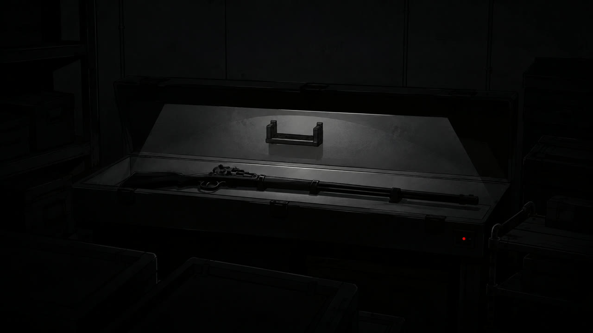

Final · 책임
Final · 책임
블루와 옐로, 핑크가 작전실로 돌아왔다. 블루가 세 사람의 결정을 전했다.
“머스킷과 변신 장치는 박사님이 보관해. 출동과 지휘도 맡길 수 없어. 네가 아는 카오스 정보는 모두 기록해.”
“우리는 현장에서 다시 확인할게요.”
“알겠다.”
박사는 머스킷과 변신 장치를 보관함에 넣고 잠갔다.
다음 날부터 블랙은 자신이 다녀온 카오스 구역의 길을 적었다. 직접 확인한 길과 정확히 기억나지 않는 길을 구분했고, 모르는 곳은 빈칸으로 남겼다.
반년 동안 블랙은 출동하지 않았다. 작전실에서 카오스 구역의 경로를 설명하고, 세 사람이 돌아오면 달라진 길을 지도에 표시했다.
그사이 박사는 미라클 부스터의 출력이 위기감지 장치에 간섭하지 않도록 장비를 손봤다. 이유 없이 울리던 알림도 멈췄다.
몇 달 뒤, 블루와 옐로, 핑크는 박사에게 블랙을 현장에 데려가겠다고 말했다. 카오스 구역의 길을 알고 있는 사람이 필요했고, 시민 대피를 맡을 사람도 부족했다.
박사는 세 사람의 말을 들은 뒤 보관함을 열었다. 머스킷은 그대로 둔 채 변신 장치만 꺼냈다.
“블랙은 시민 대피를 맡아용. 길이 달라졌거나 모르는 곳이 나오면 멈추고 세 사람과 확인해용.”
블랙은 고개를 끄덕이고 변신 장치를 받았다. 머스킷은 보관함에 남았다.

엄마와 아빠의 손을 잡고 집으로 가던 길이었어.
사람들이 괴인이 나타났다고 소리치며 달려왔어. 엄마와 아빠는 내 손을 잡고 대피하는 사람들을 따라갔어.
잠시 뒤 네 명의 미라클 레인저가 도착했어.
블랙, 블루, 옐로, 핑크!
블랙은 무기를 들고 있지 않았어. 넘어진 사람을 일으켜 대피로로 데려갔고, 핑크가 마지막 사람까지 빠져나왔다고 알려 줄 때까지 입구를 지켰어. 블루는 괴인을 막고, 옐로는 사람들이 빠져나갈 길을 열었어.
엄마는 레드가 우리 가족을 먼저 찾기 시작했고, 저 네 사람이 엄마와 아빠를 데리고 돌아왔다고 말해 줬어.
나는 블랙과 블루, 옐로, 핑크의 이름을 불렀어. 네 사람이 우리를 돌아보자 엄마와 아빠도 함께 손을 흔들었어.
레드는 보이지 않았어. 나는 엄마와 아빠의 손을 잡은 채 네 사람이 골목 끝으로 사라질 때까지 바라봤어.
출동이 끝난 뒤 핑크가 귀환한 대원들의 이름을 차례로 확인했다. 블루와 옐로가 대답했고, 핑크는 마지막으로 블랙을 불렀다.
“이상 없다.”
블루와 옐로, 핑크가 먼저 연구소로 들어왔다. 블랙은 뒤에 남은 사람이 없는지 확인한 뒤 마지막으로 출입문을 통과했다.
박사는 네 사람을 직접 확인하고 문을 닫았다.
네 사람은 작전실에서 현장 기록을 함께 확인했다. 블루와 옐로가 달라진 길을 설명했고, 핑크는 통신이 끊겼던 구간을 짚었다. 블랙은 세 사람의 설명에 맞춰 보고서를 고쳤다.
확인이 끝나자 세 사람은 먼저 식당으로 향했다. 핑크는 문을 나서기 전에 블랙을 돌아봤다.
“보고서 끝나면 바로 와요. 박사님이 기다려요.”
혼자 남은 블랙은 보고서를 마친 뒤 서랍을 열었다. 안에는 레드의 마지막 보고서가 보관되어 있었다.
블랙은 레드의 보고서를 꺼내 오늘 작성한 작전 보고서 옆에 놓았다. 레드의 보고서 뒤에는 박사가 작성한 구조 결과가 함께 보관되어 있었다.
구조 대상자 두 명, 무사 귀환.
레드.
오늘은 블루의 보고가 끝날 때까지 기다렸다. 옐로에게 돌아갈 길을 물었고, 핑크가 마지막 시민을 확인한 뒤에 움직였다.
네가 블루를 팀에 데려왔을 때 했던 말을 기억한다.
사람은 바뀔 수 있어.
나는 그 말을 믿지 않았다.
그날 나는 네게 왜 카오스에 갔는지 묻지 않았다. 네가 아이의 부모를 찾고 있다는 말도 듣지 않은 채 너를 죽였다.
네가 죽었다는 사실은 바뀌지 않는다.
다음 출동에서도 먼저 묻고, 대답을 끝까지 듣겠다.
네가 찾던 두 사람은 아이에게 돌아갔다.
오늘 출동한 네 사람도 모두 돌아왔다.
복도에서 블루가 블랙을 불렀다.
“안 올 거야?”
옐로는 음식이 식는다고 재촉했고, 핑크는 이번에는 기다리지 않겠다고 말했다.
블랙은 두 보고서를 나란히 서랍에 넣었다.
“지금 간다.”
블랙은 불을 끄고 세 사람이 기다리는 식당으로 향했다.